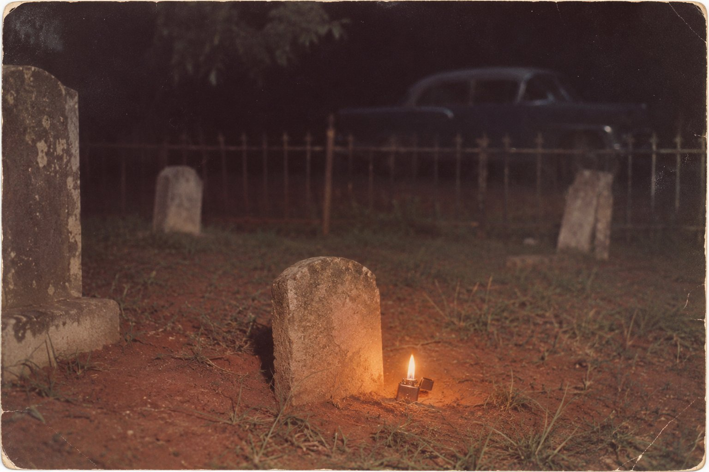

Лик

Садитесь вот сюда, мисс, в тень, где качалка. Нет, ту не трогайте, у неё полоз треснул ещё при Эйзенхауэре, и муж мой, царствие ему небесное, всё собирался его перебрать, да так и лёг на Прайсвиллском кладбище с этим полозом на совести. Чаю со льдом налью. Лёд у меня свой, морозилку сын привёз из Мемфиса, он там служит в страховой компании и ходит в галстуке даже по воскресеньям, когда никто не заставляет.
Вы у меня двенадцатая с весны, я считаю. Как вышла та книжка, что он будто бы жив, так и ездят. Кто-то в городе сболтнул, что я была в доме, когда он родился, и теперь едут из газет, из журналов, один был даже из Японии, с переводчиком, и оба разулись у двери, хотя я их не просила. Все спрашивают одно и то же: жив он или нет. Я каждому отвечаю, что вопрос неправильный, каждый это записывает и уезжает с тем же, с чем приехал. Вы, я вижу, уже раскрыли блокнот. Ничего, пишите. Только дослушайте до конца, а потом решайте, что из этого печатать. Думаю, ничего.
Ист-Тупело в тридцать пятом году был не город и не деревня, а то, что лежит между ними на красной глине, когда дорога до города есть, а дела у тебя в городе нет. Мы жили через два двора от Пресли, по Старой Салтилло-роуд. Дом свой они поставили за год до того: Вернон с отцом и братом сложили его сами на сто восемьдесят долларов, взятых в долг у человека, на которого Вернон работал. Две комнаты, одна за другой, крыльцо спереди. У нас такие дома звали «дробовиками»: откроешь переднюю дверь и заднюю, и можно стрелять насквозь, ни во что не попав. Так вот, в ту ночь в этом доме негде было спрятать ребёнка от того, что взрослые хотели от него спрятать, потому что весь дом был одна комната, разрезанная пополам.
Мать моя пошла помогать, а меня взяла топить печку и носить воду. Мне тогда не доверяли два ведра сразу, только одно, и я бегала с ним от колонки, а январь был злой, глина на дороге смёрзлась в рёбра, и я дважды падала и дважды возвращалась за водой заново, потому что мать сказала: пустой не приходи. Доктор Хант приехал из города на машине, и машина стояла у крыльца с горящими фарами, пока он не велел их выключить: аккумулятор, сказал, сядет, а мне ещё обратно.
Первый мальчик родился около четырёх, и он не закричал. Я стояла у печки с кочергой и видела, как доктор держит его в руках дольше, чем держат живого, и потом кладёт на стул, на сложенное полотенце. Никто на этого мальчика больше не смотрел, все смотрели на Глэдис, потому что с ней было не кончено, а я смотрела, потому что мне было не велено смотреть. Лампа стояла на полке, и свет падал ему прямо на лицо. Он был беленький, с чёрными волосами, мокрыми, будто его из речки достали, и верхняя губа у него была приподнята с одного края, совсем чуть-чуть, как будто он собрался сказать что-то дерзкое и в последний момент передумал.
Через полчаса родился второй и закричал так, что моя бабка, которая сидела на крыльце в двух одеялах и курила трубку, сказала через стену: «Ну, этот жить будет». И его положили Глэдис на грудь, и тут уже все смотрели на него, а я смотрела на них обоих по очереди, на того, что на стуле, и на того, что у матери, и у меня кочерга выпала из рук. Вы ведь знаете, мисс, как говорят про близнецов: похожи как две капли. Так вот, это была неправда. Похожи бывают разные люди. А это было одно и то же лицо, которое показали мне два раза. Только у живого губа поднималась с другого края.
Я тогда не знала, как это назвать. Потом, в школе, учительница поставила перед нами зеркало и велела поднять правую руку, и девочка в зеркале подняла левую, и все засмеялись, а я нет. Я подумала про стул и полотенце. У одного лица было два хозяина, и они смотрели друг на друга, как человек смотрит на себя в зеркало, когда бреется: всё то же самое, только наоборот.
Бабка вошла погреться, поглядела на стул, поглядела на кровать и сказала одну вещь, за которую мать потом всю дорогу домой шипела на неё, как на кошку. Она сказала: «Одно лицо на двоих не делят. Его носит тот, кто живой, а тот, кто первый, ждёт. Рано или поздно своё заберёт». Глэдис, слава Богу, не слышала, ей было не до того. Глэдис потом всю жизнь говорила другое, и это все в Тупело слышали, не только я: когда один близнец умирает, живому достаётся сила обоих. Хорошая была женщина, громкая, весёлая, когда не горевала, и плясать умела, как никто на нашей улице. Ей надо было во что-то верить, чтобы растить одного вместо двоих, и она поверила в силу. Бабка моя верила в долг. Я, мисс, со временем стала думать, что правы были обе, только про разное.
Назвали их Джесси Гэрон и Элвис Арон, чтобы звучало вместе, как песня в два голоса: Гэрон, Арон. Это Глэдис так хотела. Доктор Хант, говорят, записал в своей книге второго через два «а», как в Библии, а в бумаге из штата осталось одно. Выходит, доктор с самого начала писал его отдельно от брата, а мать с отцом — вместе с ним. Я это узнала много позже и долго потом думала: кто из них был прав?
Первого похоронили на другой день в Прайсвилле, рядом с родней Пресли. Сейчас в журналах пишут, что в обувной коробке, потому что на гроб денег не было. Не знаю, коробка это была или ящик, врать не буду. Я видела только, как Вернон несёт её под мышкой, как носят то, что весит немного, а сам идёт так, будто тяжелее ничего в жизни не поднимал. Камень там потом поставили маленький и без имени. Не знаю, денег не хватило на буквы или кто-то не захотел, чтобы его звали по имени. Я на это кладбище хожу пятьдесят лет, к своим, и каждый раз прохожу мимо этого камня и каждый раз думаю, что под ним лежит человек без лица. Лицо у него взяли взаймы.
Мальчик рос у нас на глазах, и я, как старшая, иногда за ним приглядывала, когда Глэдис уходила на работу. Хороший был мальчик, тихий, вежливый до того, что взрослым делалось неловко: мэм, сэр, спасибо, мэм. Мать с него глаз не спускала, водила за руку в школу, когда другие уже бегали сами. А вечерами он сидел на крыльце один и разговаривал. Дети многие разговаривают сами с собой, и я бы не обратила внимания, если бы он не замолкал, будто ему отвечают, и не кивал потом. Один раз я спросила его, с кем это он. Он сказал: «С Джесси». Я спросила, что Джесси говорит. Он подумал, как думают дети, когда решают, можно ли тебе сказать, и сказал: «Говорит, что я неправильно улыбаюсь». И приподнял губу, с того края, с какого у него она поднималась сама. Ему было лет пять. Я тогда пошла домой и долго не могла уснуть.
В церкви Ассамблеи Божьей, нашей, деревянной, на Адамс-стрит, он пел с самых малых лет. Залезал к хору, и его не гоняли. Голос у него был свой, мисс, это я вам говорю как человек, который слышал этот голос, когда он ещё был маленьким: свой, ничей больше. Лицо было общее, а голос свой. Запомните это, это потом пригодится.
В сорок восьмом они уехали в Мемфис, ночью, с вещами на крыше машины, потому что в Тупело у них не заладилось, и про это я рассказывать не стану, это их дело. А через восемь лет он вернулся, и весь Тупело вышел на ярмарочное поле, и я тоже пошла, хотя у меня уже был муж и свой ребёнок на руках. Это было в сентябре пятьдесят шестого, на ярмарке. Детский парад по Главной улице в тот день так и назвали — «Элвис Пресли вернулся домой», и сам губернатор приехал говорить речь. На нём была синяя бархатная рубашка, и полицейских было больше, чем я видела за всю жизнь, а девчонки лезли через ограждение, как муравьи на сахар. Я стояла далеко и видела его маленьким, как на открытке. Но губу я видела. Он поднимал её, и девчонки визжали, и я подумала: вот он, тот самый край. Это они не ему визжат.
Мы тогда уже жили у самого Прайсвилла, наш дом с кладбищем через дорогу. Ночью муж спал, а я встала к ребёнку и увидела в окно огонёк между камнями. Мальчишки у нас лазили туда пить пиво, и я накинула кофту, взяла фонарь и пошла их гнать. У ворот стояла машина с погашенными фарами, и в ней кто-то сидел и курил. А у маленького камня без имени, на корточках, сидел он, в той самой рубашке, только поверх накинул куртку, и держал в руке зажигалку, потому что больше никакого света у него не было.
Он поднялся, когда меня увидел, и сказал: «Простите, мэм, я сейчас уйду». Вежливый, как в пять лет. Я сказала, что гнать его не буду, что я с Салтилло-роуд, через два двора, и что носила воду в ту ночь, когда он родился. Он долго на меня смотрел, а потом сказал: «Тогда вы его видели». Не «нас», мисс. «Его».
Мы сели на скамейку у ограды Пресли. Вы скажете, что я сочиняю, раз такая старая и так хорошо помню. Помню, потому что потом тридцать лет повторяла это себе, чтобы не забыть, а повторять было некому. Он спросил, кто был первым. Я сказала: он, Джесси, на полчаса раньше. Он спросил, был ли тот похож. Я сказала, что не похож, а то же самое, только губа с другого края. Он засмеялся, нехорошо засмеялся, коротко, и сказал: «Я так и знал. Знаете, мэм, я каждое утро бреюсь, и он на меня смотрит. В зеркале ведь всё наоборот. Значит, в зеркале — он. Я всю жизнь бреюсь его лицом».
Потом сказал, что мама говорит, будто у него сила за двоих. «Мама добрая, — сказал он. — Это не сила, мэм. Это у меня его вещь, которую мне дали поносить. Девочки визжат вот от этого, — и поднял губу, — а это не моё. Моё вот что». И он тихо, сидя на скамейке, на кладбище, ночью, спел мне полкуплета из церковного гимна, того, что мы пели на Адамс-стрит, про то, как придёт день и все соберутся у реки. Голос у него был тот самый, детский, только выросший. Я заплакала, мисс, хотя не из плаксивых, это вам кто угодно в Тупело скажет.
Я спросила, зачем он сюда пришёл. Он сказал, что приходит каждый раз, когда бывает в Миссисипи, что ему надо сказать брату, что он помнит, чьё на нём лицо. «Он ждёт, — сказал он. — Я это знаю с детства. Он ничего не говорит про это, но я знаю. Он ждёт, когда я верну». Я сказала, что бабка моя говорила то же самое, и мне стало стыдно, что я это сказала, но он кивнул, как будто я ему что-то подтвердила по делу. А потом он сказал про имя. Он сказал, что когда-нибудь поменяет «Арон» на «Аарон», как в Библии. Я спросила зачем. Он сказал: «Аарон был брат Моисея. Моисей был косноязычен, мэм, и Бог дал ему брата, чтобы тот говорил за него. Вот это я. Я говорю за того, кто не может. Пусть хоть имя будет честное».
Потом из машины свистнули, и он встал, отряхнул колени и сказал мне: «Спасибо, мэм, что не прогнали». И ушёл. А на земле у камня осталась зажигалка, и я её подняла и потом двадцать лет держала в ящике с нитками, а в семьдесят седьмом отнесла обратно и положила к камню, потому что подумала, что так будет правильно.
Дальше вы всё знаете не хуже меня, это было в газетах. Мать его умерла в августе пятьдесят восьмого, четырнадцатого числа, и он, говорят, так и не оправился. Я в Мемфис к нему не ездила, кто я ему. Только видела по телевизору, как у него с годами менялось лицо, полнело, тяжелело, а губа поднималась всё реже. Как будто он его берёг. Или как будто оно ему уже жало. А имя он и правда стал писать через два «а», это потом и его семья подтверждала, и на камне в Грейсленде у него так написано. Те, кто ко мне ездят, говорят, что это ошибка и что раз ошибка, значит, в могиле не он. Нет, мисс. Это единственное на том камне, в чём он сам был уверен.
Шестнадцатого августа семьдесят седьмого года он не спал всю ночь, это потом рассказывала его девушка. Под утро играли в мяч на его корте, потом он сел за рояль и спел пару песен, потом пошёл в ванную и взял с собой книжку. Девушка сказала ему: не засни там. Он сказал: не засну. Это последние его слова, которые кто-то слышал. Книжка была про Туринскую плащаницу, «Научные поиски лика Иисуса», про то, как с тела сняли ткань, а на ткани осталось лицо. Тело ушло, мисс, а лицо осталось. Вот что он читал в последнее утро. Я когда это прочла в газете, села на крыльце и сидела до темноты.
Доктора сказали, что остановилось сердце, и я с доктора́ми не спорю. Сердце у него было одно, своё. Это лицо было на двоих.
На другой день его выставили в Грейсленде, и я поехала в Мемфис на автобусе. Сын мне тогда ещё не помогал, был маленький, муж не хотел меня пускать, а я поехала. Очередь стояла от ворот по всему бульвару, люди падали от жары, и их уносили на руках, а мы стояли и обмахивались кто чем, у меня был церковный веер с картинкой. Внутрь пускали ненадолго, и надо было идти, не останавливаясь. Я шла и смотрела. И теперь все говорят: восковая кукла. Даже в журналах пишут, что лицо было как из воска, что на нём выступил пот, что это был не он. Не кукла это была, мисс. Вы бывали в старых домах, откуда вынесли образ? На обоях остаётся светлое место, ровно по раме, и видно, что тут что-то висело, а что — уже не видно. Вот так он и лежал. Со светлым местом вместо лица. Тело было его, и руки его, и волосы, а лица не было, его забрали. Хозяин пришёл и забрал своё, как бабка сказала. А люди смотрели на светлое место и думали, что это воск.
В тот же день, говорят, в мемфисском аэропорту человек с его лицом купил билет в один конец до Буэнос-Айреса и назвался Джоном Барроузом, а это было имя, под которым Элвиса записывали в гостиницах. Мне это рассказали двое из двенадцати, и оба при этом глядели на меня так, будто сейчас я им скажу: да, это он. Не он. И я даже не знаю, было ли это. Но если было, я понимаю, почему так далеко. Сорок два года пролежать под камнем без имени в коробке из-под чего-то, а потом получить наконец лицо — да тут уедешь на край света, лишь бы подальше от Прайсвилла. И имя он взял из гостиничной книги, потому что своего у него на камне не было. Кто ему его дал?
Через две недели какие-то люди полезли ночью на кладбище в Мемфисе, где его положили рядом с матерью. Их поймали, писали про выкуп. А в октябре Вернон тихо, ночью, перевёз и его, и Глэдис домой, в Грейсленд, в сад за домом. И правильно сделал. А в январе кто-то сфотографировал в Грейсленде, в купальном домике, человека за сеткой двери. Говорят, похож. Я эту карточку видела. Похож, мисс, ещё бы. Только я бы на вашем месте поглядела, с какого края у него губа. Он пришёл посмотреть на дом, где жило его лицо. Где ещё ему было смотреть, как не в Грейсленде.
А потом пошли эти видения по всей Америке. В этом году одна женщина в Мичигане, в Каламазу, видела его в продуктовом магазине, а потом в «Бургер-Кинге», и вот уже вся страна смеётся и ездит к ней. Не смейтесь над ней, мисс. Она видела. Он ел. Он сорок два года не ел.
Вы теперь, наверное, хотите спросить, почему я так уверена, что это не Элвис. Потому что я спрашивала. Всех, кто ко мне приезжал, я спрашивала одно: а пел ли он? В магазине, в аэропорту, в купальном домике, где угодно — хоть кто-нибудь слышал, чтобы он пел? Хоть напевал? Нет. Никто ни разу. Его видят, а голоса его не слышат. Он ходит молча, ест молча, смотрит молча. Потому что голос был свой, мисс, я вам говорила, я его слышала на Адамс-стрит и ночью на этой скамейке. Голос был Элвиса, и Элвис забрал его с собой туда, куда ушёл. А тот, первый, получил назад одно лицо.
Этой весной я пошла к мужу на кладбище, подвязать розу, и у маленького камня без имени стоял мужчина в бейсболке, немолодой, тяжёлый в плечах, с бакенбардами, какие сейчас уже никто не носит. Я подумала сначала, что это из тех, что ездят, из поклонников, их много бывает в январе, а тут был апрель. Он повернулся ко мне. Я это лицо знаю, мисс, я его видела раньше всех на свете, на полотенце, при лампе. Губа у него поднялась, с того самого края, с другого. Он открыл рот, как будто хотел что-то сказать, и я ждала. Я стояла с ножницами и с бечёвкой и ждала, а он стоял с открытым ртом. И ничего. Ни звука. Как будто человек сунул руку в карман за ключами, а карман пустой. Потом закрыл рот и ушёл к дороге, и у ворот никакой машины не было.
Вот и всё. Вы спросили, жив ли он. Элвис Пресли умер шестнадцатого августа у себя дома и лежит в Грейсленде под тем именем, которое сам себе выбрал, с двумя «а». А тот, кого видят, — не живой, мисс. Он пришёл за своим. Лицо ему вернули. Теперь ему нужен голос.
И вот чего я боюсь, раз уж вы дослушали. По всей Америке сейчас тысячи мужчин поют его голосом. В париках, в белых костюмах с камешками, в Лас-Вегасе, на свадьбах, на ярмарках, в каждом городе по одному, а в больших по десять. Они стараются, учат каждый вздох, каждое «спасибо, большое спасибо». И кое у кого, говорят, получается так похоже, что люди плачут. Я думаю о них по ночам. Лицо у него теперь есть. Он ходит и слушает. И рано или поздно он найдёт того, у кого голос совсем как настоящий, — и подойдёт к нему после концерта, и улыбнётся, с того края.
Пейте чай, мисс. Лёд совсем растаял.
Тбилиси, ноябрь 2026